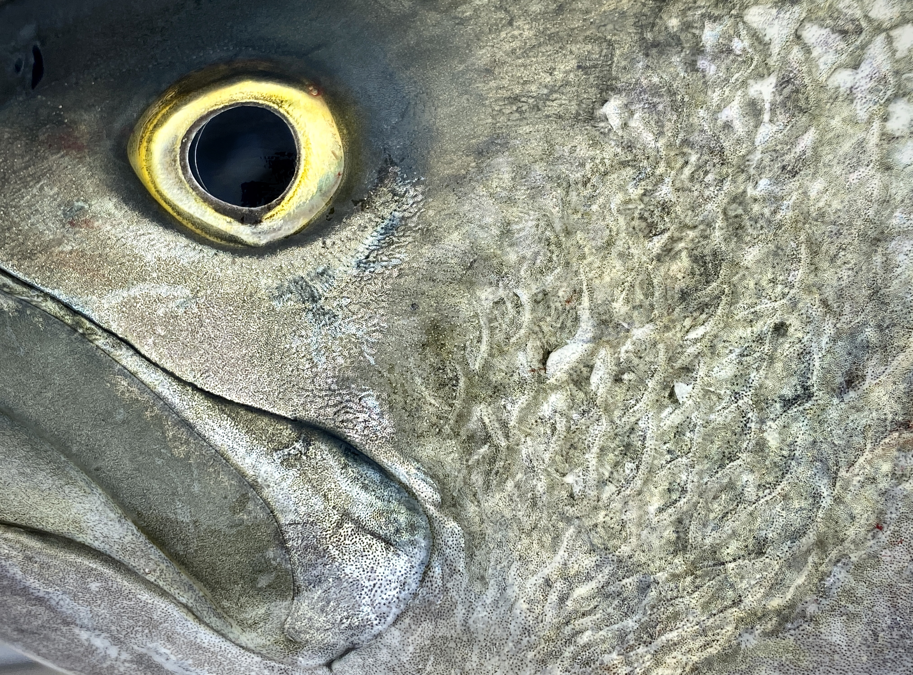

← Back to all trips
Great Dunes Walk
Cape Cod’s working harbors come alive with strange creatures every night. Searching around piers after dark reveals a world of nocturnal animals like glittering squid, camouflaged sea slugs, and unnervingly speedy polychaete worms.
Powerful flashlights allow us to see clearly under the water’s surface without the glare of the sun, and some animals are even attracted to our lights.
We can use dipnets and clear observation tanks to take our time watching and photographing most animals, as long as they can be safely caught and released. Alternately, simply holding a flashlight steady in the water can be enough to watch a mesmerizing array of creatures gather in its beam.
Inquire about this trip